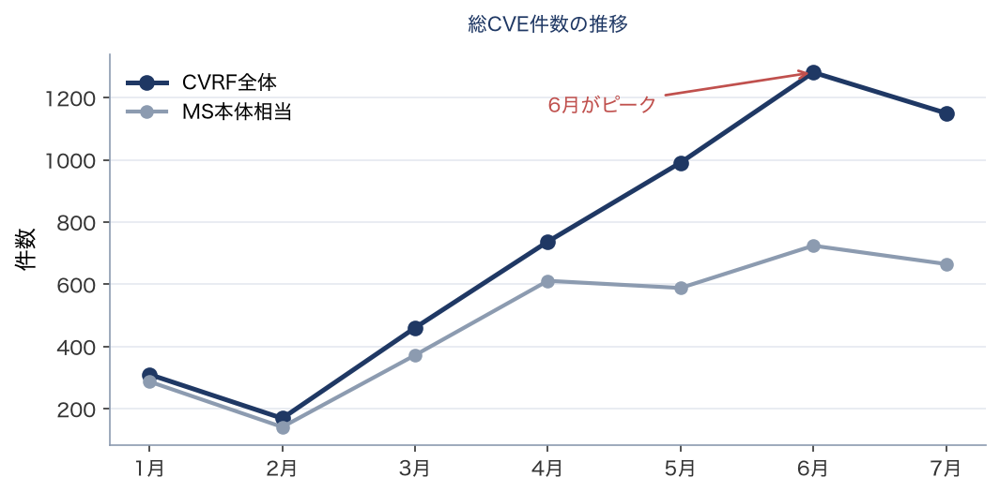
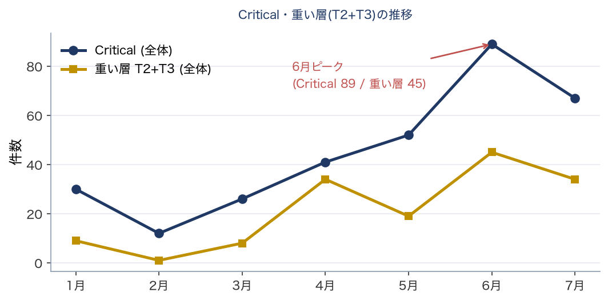
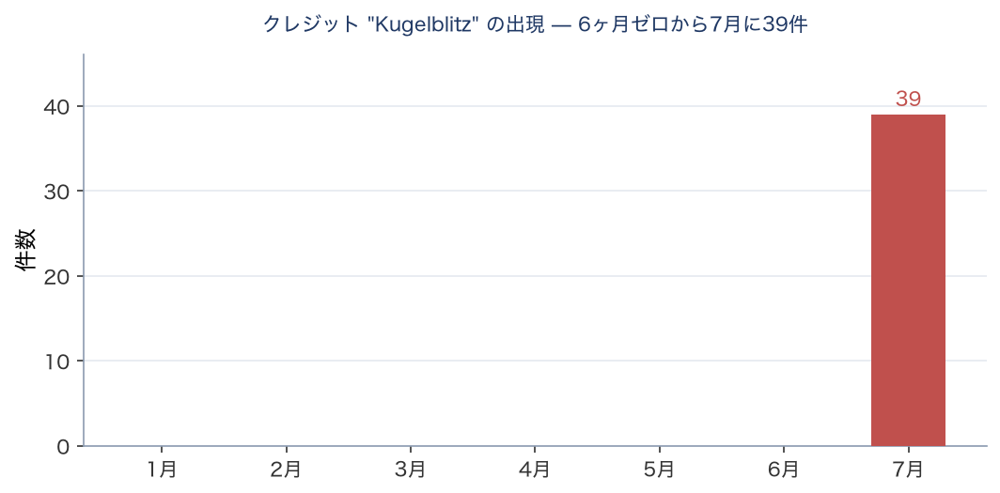
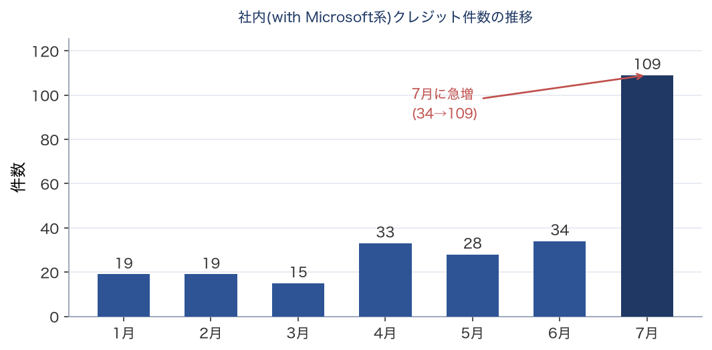

技術レポート（機械生成の事実 + 人間の解釈）
フロンティアAIによる脆弱性発見の急増
2026年7月時点の状況分析と、脆弱性対応にあたる実務者への示唆
脆弱性・パッチ対応の実務者および意思決定者
本レポートの構成と日付について 本レポートは、自動監視スクリプトが生成した事実記録（数値・表・グラフ）に、人間の解釈を差し込んで構成される。 事実データ取得日: 2026-07-15（スナップショットとして凍結） 解釈（本文分析）更新日: 2026-07-19 ※事実は自動、解釈は人間が別途更新する。両者の日付が離れている場合は、解釈が最新の事実を反映していない可能性がある。 |
MSRC の事後改訂について 本レポートは 2026-07-15 確定値に基づく。MSRC は過去月を事後改訂しており（例：6月 CVE 1281→1205）、改訂後データでは異なる結果に見える場合がある。改訂記録は別途保持。 |
【免責・出典】 • 本レポートは、脆弱性対応にあたる実務者を投影した仮想的な書き手による非公式な分析であり、特定の個人・組織の見解ではない。 • 事実データの出典：Microsoft MSRC CVRF、CISA KEV、その他公開情報。 • 分析の生成には AI（大規模言語モデル）を用いている。事実は可能な範囲で検証しているが、正確性・完全性を保証しない。重要な判断は一次情報で確認すること。 • 事実は自動更新されるが解釈は随時更新であり、両者の日付が離れている場合がある（ヘッダ参照）。 • 鮮度：本レポートの事実は 2026-07-15 時点。KEV や PoC 状況は時々刻々変わるため、最新は一次情報を参照。 |
【中立性に関する注記】 本レポートの分析生成には Anthropic 社の AI（Claude）を用いている。本レポートは同社の Project Glasswing 等に言及するが、これは公開情報に基づく中立的な記述を意図したものであり、特定企業を推奨・擁護するものではない。読者は一次情報に当たり、独自に判断されたい。 |
要旨
2026年7月14日のMicrosoft月例更新（Patch Tuesday）は、報道ベースで569〜622件と同社史上最多とされた。ただしMSRC一次データで母集団を揃えると、実態は6月がピーク（MS本体相当724件）で、7月（同665件）はむしろ微減である。7月の「記録更新」は集計基準（Edge/Chromium等の合算）による面が大きい。いずれにせよ件数は前年までの水準を大きく上回って高止まりしており、増加の主因はMicrosoft自身が公式に認めている（内製AIツールMDASHによる脆弱性発見）。
ただし、脆弱性対応にあたる組織の実務負荷という観点では冷静な評価が必要である。第一に、今月実際に悪用が確認されたゼロデイ脆弱性3件は、いずれも人間の研究者（Microsoft社内IR部隊・Mandiant等）が発見したものである。ただしAIが重大な脆弱性に全く到達していないわけではない。Microsoftの内製AI（MDASH）は、5月時点で既にネットワーク/カーネルの重大なリモートコード実行（RCE）4件を含む16件を公式に発見・実証している。第二に、今月AIが量産した脆弱性の実体を一次データで追跡した結果、その大半（特に本レポートで追跡した特定エンティティ由来分）はMicrosoft Edge（ブラウザ）の低深刻度・自動更新で解消する領域に集中していた。件数は爆発したが、夜間メンテナンスを要する重い作業は増えていない。
一方、当初「フロンティアAI登場から90日で脆弱性が大量に出る」と予想された波のうち、他社製品・OSSを対象とする協調開示（Anthropic社 Project Glasswing）由来の分は、開示猶予期間（embargo）の満了待ちで本日時点ではまだ顕在化していない（発見者クレジットで確認：Anthropic が関与するのは共同研究1件のみで、深刻度も軽微。補遺参照）。これが第二波として今後（8月以降）到来する可能性が高い。
結論（一言） CVE件数の記録更新に動揺する必要はない。実務における作業増は限定的である。 監視すべきは「件数」ではなく、①重い層（変更管理を要する脆弱性）の増加、②8月以降に到来しうる協調開示の第二波、の2点である。 |
用語解説：本レポートの「CVRF全体」と「MS本体相当」 CVRF全体 = Microsoft の脆弱性データAPI（MSRC CVRF）が1か月分として返す全CVEレコード。Windows本体・Office等に加え、Edge/Chromium（Googleが修正しMicrosoftが再掲載する分）、Mariner（Azure Linux）、Azureクラウドサービスが全て混在する。本レポートで「1,150件」等と記す場合はこれを指す。 MS本体相当 = 上記からEdge/Chromium・Mariner・Azureクラウドを除いたもの。報道各社が「Microsoft本体の件数」として数える範囲（7月で569〜622件）に近い。 両者を併記する理由：報道の件数は集計基準によって569〜622件と割れ、一次データの1,150件とも一致しない。母集団を明示しないと比較が成立しないため、本レポートは常に両方を示す。 |
分析：脆弱性を三層に分けて評価する
「AIが脆弱性を大量に生んでいる」は事実だが、粗すぎる。防御側の実務判断のためには、脆弱性を発見主体と実務負荷で三層に分解する必要がある。本レポートの一次データ分析は、以下の構造を支持している。
層 |
発見の主体（2026年7月時点） |
実務負荷 |
① 刃（悪用される重大脆弱性） |
主に人間が発見。今月の悪用ゼロデイ3件は全て人間。ただしMicrosoftの内製AI（MDASH）が5月にカーネル/ネットワークのCritical RCEを公式発見。AIも一部到達し始めた |
高（即時対応） |
② 面・自社製品（Edge等の裾野） |
自動化が疑われる新規エンティティ（Kugelblitz）が7月に突如出現。本レポートで追跡した39件は全てEdgeの低深刻度。正体（AIか否か）は未確認 |
低（自動更新で解消） |
③ 面・他社/OSS（協調開示） |
Glasswing/Mythos経由。embargo満了待ちで本日時点は未到来 |
中（第二波・時期未定） |
核心：「刃は主に人間、面はAI。ただし境界は動いている」
今回の一次データ調査で見えたのは、AIによる脆弱性発見が主に「面」――人間が手間の割に地味だとして後回しにする広大な裾野、具体的にはEdgeブラウザの表面を機械的に網羅する作業に投入されているという構図である。今月Edgeに突如出現した新規クレジット「Kugelblitz」（39件、全て低深刻度）はその典型と見られる。
ただし「刃はすべて人間」と単純化するのは誤りである。Microsoftの内製AIツールMDASHは、5月時点で既にtcpip.sys（カーネルTCP/IPスタック）やIKEv2サービスといった、最も入念にレビューされる中核コンポーネントで、Critical RCEを含む16件を公式に発見している。AIは「面」から始まったが、既に「刃」の領域にも足をかけている。この裾野スキャンが基幹製品へ上がっていく動きは既に始まっており、その速度こそが今後の分岐点である。
なお、本レポートが追跡したEdgeの新規エンティティ「Kugelblitz」と、公式にAIと確認されているMDASHは、対象領域（Edge vs カーネル/ネットワーク）が全く異なる別物である。Kugelblitzの正体が内製AIか否かは、本日時点の一次情報では確認できていない（別紙5・6参照）。
規制産業の実務者への示唆と推奨アクション
以下は本レポートの分析に基づく推奨であり、確定した規制要求ではない。規制当局の個別の監督上の期待については、一次情報での確認を前提とする。
1. 監視指標の転換（最優先）
「CVE件数」を脅威指標として使うのをやめる。 プロの追跡機関ですら今月の件数は569〜622件と一致しておらず、指標として既に破綻している。
代わりに、変更管理・メンテナンスウィンドウを要する「重い層（サーバ製品・ブート/暗号系）」の月次増減を追う。ここが増えた時が人員計画の分岐点である。
2. トリアージ手法をCVSS深刻度から脱却させる（最重要・業界コンセンサス）
件数だけでなく「深刻度スコア」も飽和して機能しなくなっている。 1回のリリースで600超のCVEが出て大半がHigh/Criticalだと、"Critical"というラベルは優先順位付けの役に立たなくなる。実際、今月実際に悪用された2件はいずれも派手なCVSS 9.8ではなく、中位の権限昇格バグであった。
外部の複数の専門機関が同じ結論に達している：CVSSベースの優先順位付けは実際の悪用試行の約2.3%しか予測できない一方、全脆弱性の約57%への対応を強いる。
移行先：CVSSスコア単独をやめ、CISA KEV（実際に悪用が確認された脆弱性カタログ）＋EPSS（30日以内の悪用確率）＋資産の到達性で優先順位を決める。これは規制当局のリスクベース監督の考え方とも整合する。
補足：NISTは2026年4月にNVD（脆弱性データベース）をトリアージ運用へ移行し、一部の過去CVEを「エンリッチ予定なし」と宣言した。CVSSを支えるデータ基盤自体が追随できなくなっている点も、脱CVSSを後押しする。
3. 緊急パッチSLAの短縮
パッチ公開の差分から動作する攻撃コードをAI支援で短時間に生成できる実証がある。緊急パッチの適用判断を「週」単位から「時間〜日」単位へ引き上げる。
特に本月の悪用確認ゼロデイ（AD FS／SharePoint の権限昇格）は、フェデレーション基盤・オンプレSharePoint運用があれば当日対応対象。CISA KEV未登録でも、Microsoftが悪用フラグを立てている時点で待たずに対応する。
4. Edge/Chromium 自動更新の実効性確認
AI由来の脆弱性の大半がEdgeに集中している以上、Edge/Chromiumの自動更新が全端末で実際に効いているかの確認価値が高い。
落とし穴：Electron/CEF埋め込みアプリ（Teams、Slack、VS Code等）は、ブラウザ自動更新の恩恵を受けない。 SBOMでこれらの依存を洗い出すことを推奨する。大規模端末環境の典型的な穴。
5. 第二波（協調開示・分割パッチ）への備え
8月以降、Glasswing由来のOSS/他社製品脆弱性の開示が本格化しうる。自社のOSS依存は「修正が未着手」の前提で、露出削減・セグメンテーション等の補償統制を優先する。
具体的リスク（分割パッチ）：7月にSharePointの認証バイパス（CVE-2026-55040）が修正されたが、これと連鎖して未認証RCEに至る相方のRCEバグは未修正で、Microsoftは8月修正予定とされる。1つの攻撃連鎖が複数月に分割して修正されるため、"今月分を当てたから安全"とは言えない。
監視先：red.anthropic.com、NVDフィード、CISA KEV。Anthropicの90日総括レポートは本日時点で未公開であり、公開後の精査を要する。
なお、AIによる脆弱性発見はAnthropic（Glasswing/MDASH）やMicrosoft内製に限らない。6月のHTTP.sys脆弱性はOpenAIのCodexが報告しており、複数のAIが並行して発見に寄与している。特定ベンダーに依存しない監視が必要。
6. AI依存のBCP
2026年6月、最上位AIモデルが輸出管理で19日間停止した事例がある。AIをワークフローに組み込む場合、最上位モデルへの依存はBCP対象と位置づけ、モデル多重化・フォールバック設計を標準とする。
実データ内訳 — 2026年7月 Patch Tuesday
以下は MSRC CVRF v3.0 から取得した一次データの集計である（凍結スナップショット 2026-07-15）。母集団は「CVRF全体」と、Edge/Chromium・Mariner(Azure Linux)・Azureクラウドを除いた「MS本体相当」を併記する。
表1. 深刻度別（母集団2種の併記）
深刻度 |
CVRF全体 |
(%) |
MS本体相当 |
(%) |
Critical |
67 |
6% |
62 |
9% |
Important |
594 |
52% |
545 |
82% |
Moderate |
55 |
5% |
52 |
8% |
Low |
6 |
1% |
5 |
1% |
Unrated |
428 |
37% |
1 |
0% |
合計 |
1150 |
100% |
665 |
100% |
表1（深刻度別）の要点
CVRF全体の37%（428件）が「Unrated（未格付け）」だが、MS本体相当ではわずか1件。Unratedのほぼ全数がEdge/Chromium等の除外分に由来する。報道が扱う「569〜622件」との差（約485件）の正体はここにある。件数の絶対値ではなく、母集団を揃えた比較が必要である。
表2. 再起動クラス別（実務負荷の軸）
クラス |
内容 |
CVRF全体 |
MS本体相当 |
T3 |
段階展開必須（Boot/Crypto） |
3 |
3 |
T2 |
変更管理・メンテ枠が必要 |
31 |
30 |
T0/T1 |
自動更新・定常パイプライン |
1116 |
632 |
表2（再起動クラス別）の要点
記録的な件数の97%（本体でも95%）がT0/T1、すなわち自動更新または既存の月例パイプラインで吸収できる層である。慎重な段階展開を要する重い層（T2+T3）は、CVRF全体でも34件に留まる。件数の爆発は実務負荷の爆発を意味しない。
表3. 発見者大分類（CVRF全体）
区分 |
件数 |
(%) |
備考 |
クレジット無し |
533 |
46% |
自動化を含む可能性（断定不可） |
外部研究者（実名） |
366 |
32% |
実名の外部発見者 |
匿名（Anonymous） |
98 |
9% |
名乗り出た匿名 |
社内（with Microsoft等） |
109 |
9% |
Kugelblitz/MORSE/WARP・ACS等を含む |
ハッシュ識別子 |
44 |
4% |
MSが匿名化した識別子（正体不明） |
表3（発見者大分類）の要点
発見者名は「クレジット無し=AI」を意味しない。CVRFのクレジットは外部発見・社内発見・匿名化・辞退が混在し、AI由来分を集計レベルで分離できない（別紙5参照）。この表は事実の集計であり、帰属判断ではない。
表4. Critical脆弱性の発見者内訳（集約・実名なし）
発見主体 |
Critical件数 |
傾向 |
外部研究者（実名） |
37 |
Criticalの多数派 |
匿名（Anonymous） |
10 |
— |
クレジット無し |
9 |
自動化の可能性（断定せず） |
社内（ACS/WARP/MORSE等） |
7 |
少数（Networking/Hyper-V中心） |
ハッシュ識別子 |
4 |
— |
Kugelblitz（Edge・参考） |
0 |
Criticalには出現しない（面のみ） |
件数のみ（個人実名は事実データに保存しない）。上4〜5行はバケット別で合計=Critical総数。Kugelblitz 行は横断参考（加算しない）。個別の研究者名・CVE例は解釈側に散文で記載。
表4（Critical脆弱性の発見者内訳）の要点
Critical の圧倒的多数は依然として人間の一流研究者が発見している。Microsoftの内製AI（MDASH系=ACS/WARP/MORSE）はネットワーク/Hyper-Vの一部Criticalに到達しているが少数。7月に大量出現したKugelblitz（39件）は全てEdgeの低深刻度で、Criticalには1件も現れない。すなわち「刃は主に人間、AIは一部到達、Kugelblitzは面のみ」という本編の三層モデルが、Critical 67件の内訳で裏付けられる。
表5. 製品カテゴリ別（CVRF全体）
カテゴリ |
件数 |
(%) |
Edge/Chromium |
473 |
41% |
Win Services/Components |
154 |
13% |
Kernel/Driver |
111 |
10% |
その他 |
102 |
9% |
Office/Word/Excel/PPT |
81 |
7% |
Networking |
57 |
5% |
Graphics/Media |
38 |
3% |
.NET/Dev |
25 |
2% |
RDP/Remote |
21 |
2% |
Auth/Identity |
17 |
1% |
SharePoint |
17 |
1% |
Microsoft (other) |
15 |
1% |
Azure/Cloud |
14 |
1% |
SQL/Dynamics |
9 |
1% |
Exchange |
8 |
1% |
Hyper-V/Virtual |
5 |
0% |
Boot/Crypto (T3) |
3 |
0% |
表5（製品カテゴリ別）の要点
Edge/Chromiumが41%を占め、件数の膨張を主導している（大半が自動更新で解消）。「その他102件」はゲーム（Age of Empires）、同梱OSS（ClamAV・OpenSSH・NATS）、AD DS、Configuration Manager等の雑多な集合で、無理な分類を避け原題のまま残している。
補遺：「AI関連」を示唆するクレジットの棚卸し（第二波監視のベースライン）
要旨で述べた「協調開示（Glasswing）由来の第二波はまだ来ていない」を、発見者クレジットの側面から事実確認した。7月のCVRFで、クレジット文字列に AI / agent / Anthropic / Claude / GPT / Copilot / LLM / automat のいずれかを含むものを機械的に抽出したところ36件が該当した。ただしこの大半は偶発的な文字列一致である（例：SEC-agent team は3名の人物名、KAIST・Akamai・Trail of Bits は "ai" がたまたま含まれるだけ）。
重要な事実として、Anthropic（本レポートで論じた Project Glasswing の主体）が実際に関与するクレジットは、36件中わずか1件であった（Doyensec社のある研究者が Claude and Anthropic Research と共同、CVE-2026-50479 Windows USB Hub Driver EoP、Important、T0/T1、7月初出）。
この1件は、(1) 協調開示（Glasswing）の embargo 一斉解除ではなく、Doyensec という一企業が Anthropic の研究部門と共同で発見した個別事例であり、本レポートで言う「第二波」とは別系統である。(2) 深刻度は Important、自動更新層（T0/T1）で、実務インパクトは軽微。したがって、本編の「重大な脆弱性（刃）は主に人間が発見し、Glasswing 由来の第二波はまだ本格化していない」という結論は、この事実によって変わらない（むしろ補強される）。
なお、この棚卸しは監視プログラムが生成する事実データとして private リポジトリに保持し、来月以降に「AI関連クレジットが増えるか」「重大脆弱性（Critical）に及ぶか」を比較するベースラインとする。クレジット名から発見主体の正体を断定しない方針は維持する（本レポートで Kugelblitz を MDASH と誤断定し一次情報で反証された教訓による）。
過去データとの比較 — 2026年1月〜7月の推移
以下は取得タイミングに影響されない実数のみで構成した月次推移である。クレジット無し比率のような取得ラグで変動する指標は、正確性のため意図的に除外している（別紙・棄却③参照）。
推移表（取得ラグに頑健な実数のみ）
月 |
CVE全体 |
CVE本体 |
Critical |
重い層(T2+T3) |
Kugelblitz |
社内(MS) |
1月 |
310 |
287 |
30 |
9 |
0 |
19 |
2月 |
169 |
141 |
12 |
1 |
0 |
19 |
3月 |
460 |
372 |
26 |
8 |
0 |
15 |
4月 |
737 |
611 |
41 |
34 |
0 |
33 |
5月 |
991 |
588 |
52 |
19 |
0 |
28 |
6月 |
1281 |
724 |
89 |
45 |
0 |
34 |
7月 |
1150 |
665 |
67 |
34 |
39 |
109 |

図1: 総CVE件数の推移（CVRF全体 / MS本体相当）
図1（総CVE件数）の解釈
報道では7月が「570〜622件で記録更新」と報じられたが、これは集計基準（Edge/Chromium・Mariner等の合算）による。MSRC一次データで母集団を揃えると、実態はMS本体相当で6月（724件）がピークであり、7月（665件）はむしろ微減している。いずれにせよ2026年後半は高止まりであり、この結論は変わらない。

図2: Critical件数・重い層(T2+T3)の推移
図2（Critical・重い層）の解釈
実務負荷の本質である重い層（T2+T3）は、9→1→8→34→19→45→34と単調増加ではなく激しく上下している。「AIが着実に重い層を増やす」という単純な傾向ではなく、月ごとのばらつきが大きい点が重要である。人員計画は平均トレンドではなく「いつでも45件級が来うる」という分散を前提とすべきである。

図3: クレジット「Kugelblitz」の月次出現
図3（Kugelblitz）の解釈
Edge脆弱性に紐づくクレジット「Kugelblitz」は、1〜6月まで一度も出現せず、7月に突如39件現れた。この不連続は取得タイミング・書式揺れ・人員増のいずれでも説明できず、7月に何らかの新規プロセスが投入されたことを示す。ただしその正体（内製AIか否か、MDASHとの関係）は本日時点で未確認である（別紙・棄却⑤参照）。

図4: 社内(with Microsoft系)クレジット件数の推移
図4（社内発見）の解釈
社内クレジット（with Microsoft系）は6月まで15〜34件で推移していたが、7月に109件へ急増した。この内訳にKugelblitz（39件）とWARP・ACSチーム（Microsoft社内チーム、5件）が含まれる。同じ月に、MicrosoftはMDASHの全面適用を公式表明している。ただしこれは時期の一致であり、因果は本レポートでは未確認である。社内発見の急増やKugelblitzの出現がMDASHによるものと結論づける証拠はなく、名称・時期の一致から因果を早合点しない（Kugelblitz=MDASH 誤断定と同型の罠を避ける）。
推移から読み取れること（要約） 件数のピークは報道と異なり6月（一次データ・母集団を揃えた場合）。7月の「記録更新」は集計基準の産物。 重い層は変動が大きく、単調増加ではない。分散を前提とした要員計画が必要。 7月にKugelblitz出現(0→39)と社内発見急増(34→109)が同時発生。同月にMDASH全面適用の公式表明があった（時期の一致であり、因果は未確認）。 |
KEV / EPSS — 即応の優先度づけ
以下は対象CVE（T2/T3 ∨ Critical ∨ 外部研究者クレジット）を CISA KEV・FIRST EPSS と照合した結果。KEV = 悪用確認の離散的事実（通知トリガー）。EPSS = 悪用確率の推定（取得時点の値・日々変動・参考）。数値から発見主体・因果は断定しない。
即応対象 — CISA KEV 収載（取得 2026-07-17）
CVE |
製品名 |
深刻度 |
再起動クラス |
CVE-2026-56164 |
Microsoft SharePoint Server |
Moderate |
T2 |
CVE-2026-58644 |
Microsoft SharePoint |
Critical |
T2 |
EPSS 上位 — 悪用確率の推定（取得時点 2026-07-16）
CVE |
製品カテゴリ |
EPSS |
パーセンタイル |
CVE-2026-50522 |
SharePoint |
0.2035 |
97.2% |
CVE-2026-50518 |
Networking |
0.0736 |
93.7% |
CVE-2026-56164 |
SharePoint |
0.0560 |
92.0% |
CVE-2026-49170 |
Win Services/Components |
0.0251 |
83.0% |
CVE-2026-50423 |
Kernel/Driver |
0.0248 |
82.7% |
CVE-2026-50509 |
その他 |
0.0231 |
81.5% |
CVE-2026-50667 |
Kernel/Driver |
0.0216 |
80.1% |
CVE-2026-49798 |
Kernel/Driver |
0.0215 |
80.1% |
CVE-2026-49805 |
Kernel/Driver |
0.0209 |
79.5% |
CVE-2026-49795 |
Kernel/Driver |
0.0179 |
75.9% |
CVE-2026-50329 |
Graphics/Media |
0.0175 |
75.3% |
CVE-2026-58536 |
Kernel/Driver |
0.0175 |
75.3% |
CVE-2026-54986 |
Kernel/Driver |
0.0173 |
75.0% |
CVE-2026-54114 |
Kernel/Driver |
0.0173 |
75.0% |
CVE-2026-50433 |
Graphics/Media |
0.0173 |
75.0% |
※EPSS は毎日更新され値が変動する。上表は取得時点（2026-07-16）のスナップショットであり、単独のトレンド指標として用いない。通知トリガーには KEV のみを使う（EPSS は使わない）。
※製品名（KEV表）・製品カテゴリ（EPSS表）は CVRF（2026-07-15 凍結スナップショット）由来。KEV 収載状況・EPSS 値とは別ソース・別時点である。カテゴリは表5と同一の分類による。製品名/カテゴリの数値から発見主体・因果は断定しない。
別紙：調査手順・出典・アカウンタビリティ記録
本別紙は、本編の結論に至る調査過程を、途中で棄却・修正した仮説を含めて記録する。分析の再現可能性と説明責任の確保を目的とする。特に、当初有望と考えたが後に棄却した指標を明示することで、最終結論がどの根拠に依拠し、どの根拠に依拠していないかを明確にする。
1. 調査の目的と問い
当初の問い：「いわゆるフロンティアAIの登場から90日程度で、大量の脆弱性とパッチが出てくると言われているが、実際どうか。本日時点の状況を分析せよ。」
この問いに答えるため、報道等の二次情報に加え、Microsoft Security Response Center（MSRC）が公開する一次データを直接取得・分析する方針を取った。二次情報の要約に留めず一次データに当たったのは、報道各社でCVE件数の集計が一致せず、件数指標そのものの信頼性に疑義があったためである。
2. 情報源一覧
2.1 一次データソース
MSRC CVRF API v3.0（公開・無認証のREST API） — 月次のセキュリティ更新をCVE単位の構造化データ（JSON）で提供。発見者クレジット（Acknowledgments）、深刻度、悪用状況、対象製品を含む。
エンドポイント: https://api.msrc.microsoft.com/cvrf/v3.0/cvrf/{YYYY-MMM}
スキーマ検証の参照: microsoft/MSRC-Microsoft-Security-Updates-API (GitHub)
Anthropic Project Glasswing 公式ページ（第二波の状況確認）: anthropic.com/glasswing および 初回更新（5/22）
Microsoft Security Blog: MDASH告知（5/12）: Defense at AI speed（MDASHの正体・対象CVE・ACS/MORSE/WARP体制） — Kugelblitzとの区別の一次根拠
2.2 二次情報源（報道・専門分析）
7月Patch Tuesdayの件数・帰属・注目脆弱性の確認に使用。件数が出典により異なること自体を、件数指標の破綻の証拠として扱った。
BleepingComputer（570件・集計基準の明示・Edge 468件除外）
Krebs on Security（MDASH帰属・Windows担当EVPの声明・Tenableのアナリストのコメント）
SecurityWeek・CyberScoop・Tenable（それぞれ622/622/569件）
Schneier on Security（Glasswingのデータへの懐疑論。単一の視点に偏らないため参照）
Brinqa 月次分析（集計基準の相違を明示。コア件数のベースライン比較。本レポートの母集団分離の裏付け）
CVSS脱却（EPSS+KEV）に関する業界動向: The Hacker News（7月）・Hackerstorm（NVDトリアージ移行・CVSS予測精度2.3%）
3. データ取得方法
MSRC CVRF APIは公開・無認証だが、分析環境（AIのサンドボックス）からは直接アクセスできなかった（egressのallowlist制限）。このため、分析ロジックをPythonスクリプトとして作成し、取得担当者のローカル環境で実行する方式を取った。
これは重要な手続き上の注意点である：本レポートの数値は、AIが生成したのではなく、取得担当者が自身の環境で一次APIを叩いて取得した実データである。AIの役割はロジック（スクリプト）の設計と結果の解釈に限定される。スクリプトのロジックは、実在するオープンソースのCVRFパーサでスキーマ想定を裏取りし、さらに実データで出力を検証した。
4. 分析手順（時系列）
報道の横断確認：7月Patch Tuesdayの件数を複数ソースで確認。569〜622件と不一致であること、Microsoftが増加をMDASH（内製AI）に公式帰属していること、悪用ゼロデイ3件が全て人間発見であることを把握。
一次データ取得：MSRC CVRF APIから2026年1月〜7月の各月データを取得。
件数の分解：修復アクション数・再起動クラスへの畳み込みを試行。CVE件数が防御負荷の指標として過大であることを確認（Edge等の自動更新分が件数の大半を占める）。
帰属の推定：発見者クレジットからAI由来分の分離を試行。複数の指標を作成したが、後述（第5節）のとおり多くを棄却した。
決定的シグナルの特定：クレジット名「Kugelblitz」が1月=0件、4月=0件、7月=39件（Edge脆弱性、全て低深刻度、自動更新層）という不連続な出現を確認。当初これをMicrosoft内製AIツール（MDASH）の痕跡と判断したが、後の裏取り（第5節・棄却⑤）でこの断定は誤りと判明した。
結論の統合：三層モデル（刃＝人間／面・自社＝AI軽微／面・他社＝未到来）に整理。
5. 調査過程で棄却・修正した指標【重要】
説明責任の観点から、当初採用したが後に棄却・修正した指標を記録する。最終結論は、これらの棄却された指標には依拠していない。
棄却① CVE件数（生の件数）：出典により569〜622件と一致せず。Mariner・Azure・Chromium再公開分の混入基準が各社で異なる。脅威指標としては使用しない。ただし「記録更新」という定性的事実、および指標破綻の証拠としては有効。
棄却② 修復アクション数：分析者が定義した更新チャネル数に上限が縛られるため、負荷指標としては弱い。再起動クラスの考え方は本編の三層モデルに活かしたが、数値そのものは結論の根拠にしていない。
棄却③ 「クレジット無し比率」の推移：当初、クレジット無しCVEの比率上昇（1月62%→6月83%）をMDASHの足跡と解釈した。しかし7月に46%へ急落し、説明がつかなかった。当初これを『データ取得タイミングのラグ』で説明しようとしたが、全月を同一日に取得している以上、この説明は成立しない。この指標の挙動は完全には解明できておらず、結論の根拠から除外した。教訓：CVRFの発見者クレジットは、外部発見・内製AI発見・クレジット辞退が混在し、AI由来分を集計レベルで分離する用途には適さない。
修正④ Kugelblitz「78件」→「39件」：当初 grep による手集計で78件とした。これは1CVEに同名が2回掲載される二重掲載を重複カウントしたもの。CVE単位で重複排除した正しい値は39件。0→0→39の不連続という結論自体は不変。
棄却⑤ 「Kugelblitz＝MDASH」の断定（最重要の訂正）：当初、Edgeに突如出現した「Kugelblitz」をMicrosoftの内製AIツールMDASHの痕跡と断定した。しかし一次情報での裏取りにより、この断定は支持できないと判明した。根拠：(1) MDASHが公式にクレジットされたCVE（5月公表の16件）は、tcpip.sys・IKEv2等のネットワーク/カーネル脆弱性であり、Edgeではない。(2) Microsoftの公式ブログに「Kugelblitz」の名称は一度も登場しない。登場するのはMDASH・ACS・MORSE・WARP。(3) Kugelblitzは対象がEdge (Chromium) に限られ、MDASHとは領域が完全に異なる。現在の扱い：Kugelblitzは『7月に突如出現した新規エンティティ（0→0→39）。連番集中・単一名義・二重掲載というパターンは自動化を示唆するが、それがAIか、ましてMDASHかを裏付ける証拠はない。正体は本日時点で未確認』とする。教訓：状況証拠だけで特定の実体に結びつけるのは危険。名称の一致を一次情報で確認するまで断定しない。
6. 最終的に依拠した根拠と、その限界
6.1 依拠した根拠（確度：高）
記録的件数： 複数の独立した専門機関が「同社史上最多・6月比約3倍」で一致（件数の絶対値は不一致だが、記録更新という事実は一致）。
Microsoftの自己申告： Windows担当EVPが7/9のブログでMDASH（multi-model agentic scanning harness）の全面適用と更新量増加を公式表明。一次的な自己申告であり確度が高い。
MDASHの公式実証： Microsoftは5月に、MDASHがtcpip.sys・IKEv2等でCritical RCE 4件を含む16件を発見したとCVE番号付きで公表。AIが中核コンポーネントの重大脆弱性に到達したことは一次情報で確認済み。MDASHはACS/MORSE/WARPの協働で運用される。
Kugelblitzの不連続（帰属は未確定）： Edge脆弱性に紐づく新規クレジット「Kugelblitz」が1月=0、4月=0、7月=39という不連続な出現。全て低深刻度・自動更新層という内訳は一次データで確認済み。ただしこのエンティティの正体（AIか否か）は未確認であり、MDASHとは別物である（第5節・棄却⑤）。
ゼロデイの発見者： 今月の悪用確認3件（AD FS／SharePoint／BitLocker）の発見者が全て人間であることを一次データ（Acknowledgments）で確認。
6.2 限界（確度：未確定・要注意）
「Kugelblitz」の正体は本日時点で不明。 内製AIか、Chromium由来脆弱性の再クレジット処理か、人間のチーム名かを特定できていない。MDASHとは対象領域が異なり、同一とする証拠はない。
MDASHが公式にクレジットした分（5月の16件等）以外の、名義を付けずに起票されたAI由来分は捕捉できていない。AI由来分の全体像は、集計レベルでは依然として測定不能。
Glasswing第二波の規模・時期は予測であり、確定情報ではない。Anthropicの90日総括レポートは本日時点で未公開。
本別紙に含まれる規制動向の個別事項は、本一次データ分析の対象外であり、一次情報での確認を要する。
7. 再現手順
本レポートの数値は、調査当時の集計ツールで取得したものである。公開リポジトリ msrc_monitor の collect.py / diff.py で同等の集計を再現できる（要 Python 3・requests、MSRC API に到達可能なネットワーク）。なお MSRC は過去月を事後改訂するため、完全に同一の値が再現されるとは限らない（改訂の扱いは本文ヘッダおよびスナップショット凍結方針を参照）。
① 各月の一次データ取得（2026年1〜7月の収集）:
python collect.py --backfill 2026-Jan 2026-Jul
② 前月比・閾値判定・新規クレジット（Kugelblitz を含む）の確認:
python diff.py 2026-Jul
③ 発見者クレジットの集計（CVE単位・重複排除済み。監査用）:
state/2026-Jul.json の credit_counts / finder_bucket を参照（collect.py が生成）
確度の階層（本レポートの主張の格付け） 【高】 記録的件数は複数ソース一致（ただしピークは母集団を揃えると6月）／Microsoftが増加をAIに公式帰属／MDASHが5月にカーネル/ネットワークのCritical RCEを公式発見／悪用ゼロデイは全て人間（DART/Mandiant）発見／Kugelblitzが7月に0→0→39で出現し全てEdge・低深刻度／件数指標・CVSS深刻度の飽和は業界コンセンサス 【中】 三層モデルによる整理／AIによる発見が「面」中心から基幹製品へ拡大しつつあるとの見立て／第二波が8月以降に到来するとの見立て 【未確定】 Kugelblitzの正体（内製AIか否か。MDASHとは別物）／AI由来分の全体規模（集計レベルでは測定不能）／Glasswing第二波の正確な規模と時期／規制動向の個別事項（要一次確認） 【要注意】 本レポートのCVRF全体のCritical件数（例：6月89件）はEdge/Chromium等を含み、報道のコア値（6月32〜39件）と乖離する。傾向把握には有効だが、絶対値の外部比較にはMS本体相当列を用いること。 |
本レポートはAIアシスタント（Claude）との対話を通じて作成された。一次データの取得・実行は取得環境で行われ、数値はその実行結果に基づく。解釈・分析にはAIの寄与が含まれるため、重要な意思決定に用いる際は一次情報での再確認を推奨する。